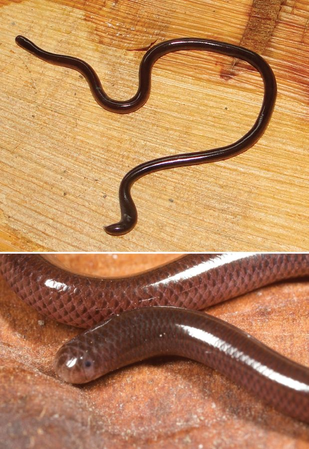

अंधा साँपBrahminy Blind Snake
Indotyphlops braminus · Typhlopidae · REP-0018

- Scientific name
- Indotyphlops braminus (Daudin, 1803)
- Family
- Typhlopidae
- Hindi
- अंधा साँप
- Local names
- andha saamp, andha sanp, andha samp, keenchua saamp, dumuhi
- Status here
- native
- Movement
- Resident, here all year
- IUCN
- not evaluated
- Review
- audited and independently read
When to look कब देखें
Present all year.
Tell it apart from इनसे अलग पहचानें
अंधा साँप / Brahminy Blind Snake
Indotyphlops braminus (Daudin, 1803) — Typhlopidae
अंधा साँप — पृथ्वी के अंदर कीड़ों को खाने वाला एक छोटा, बिल्कुल हानिरहित सांप। लिपटपुठ, पीले-भूरे रंग की एक पतली-सी रस्सी जैसा, आँखें तो है पर देख नहीं सकता। मिट्टी, पत्तियों, सड़ी लकड़ी और दीमक की बाँबी में रहता है। किसी को काटता नहीं, किसी को डराता नहीं। कभी-कभी बगीचे में खोदते समय या नींद में हाथ में आ जाता है तो लोग डर जाते हैं, पर यह सबसे सुरक्षित सांप है।
Quick Identification त्वरित पहचान
| Feature | Description |
|---|---|
| Size | 15–27 cm, extremely slender |
| Colour | Uniform pale yellow, brown, or dark grey |
| Head | Blunt and rounded, not wider than body; mouth tiny, underneath the head |
| Eyes | Present but covered by a transparent scale; non-functional |
| Body | Cylindrical, uniform diameter; smooth glossy scales |
| Tail | Blunt, ending in a small spine |
| Behaviour | Burrowing; found in soil or decomposing matter; never bites |
Field tip: A uniform, glossy, thread-like creature the thickness of a pencil, yellowish or brown, with a blunt head and tail, found in soil. Completely harmless. Looks nothing like any venomous snake because it is so tiny and different.
हिंदी — कैसे पहचानें: बिल्कुल पतला, एक धागे जैसा, पीले-भूरे रंग का, लिपटपुठ सांप। आँखें ढकी हुई हैं। काटता नहीं, डराता नहीं। मिट्टी खोदते समय या पत्तियों में मिल जाता है।
Morphology आकारिकी
Biometrics (typical measurements from northern Indian populations):
| Measurement | Range |
|---|---|
| Total length | 15–27 cm |
| Body diameter | 2–3 mm |
| Weight | 0.3–0.8 g |
Head and eyes: The head is blunt and rounded, barely wider than the body. The rostral scale is large and projects downward, typical of fossorial snakes. The eyes are present but are reduced to dark specks beneath transparent ocular scales and are non-functional. The mouth is extremely small, positioned beneath the snout.
Body and scales: The body is uniformly cylindrical. All dorsal scales are keeled and in 22 rows at midbody. The entire animal has a characteristic glossy, polished appearance.
Reproductive note: The Brahminy Blind Snake is parthenogenetic — all known individuals are female and reproduce without males, making populations genetically identical clones.
हिंदी: बिल्कुल पतला शरीर, ढकी हुई आँखें, छोटा मुँह। बीज रहित — सभी मादा, अपने आप बढ़ती हैं।
Behaviour & Ecology व्यवहार और पारिस्थितिकी
A soil and leaf-litter specialist, spending its entire life beneath the surface. It is almost never seen above ground, except during monsoon rains when burrows flood. Completely fossorial: it moves through soil by widening small crevices and forcing its way through, a serpentine motion that works underground.
It feeds exclusively on the eggs and pupae of ants and termites, locating them by chemosensory cues (smell). Its small mouth and teeth are perfectly adapted for this purpose — it cannot bite anything larger than an ant egg. The species is entirely harmless to humans and to all vertebrates.
When handled, it does not struggle or bite; it may secrete musk from its cloaca.
हिंदी: मिट्टी में जीवन भर रहता है। चींटियों और दीमकों के अंडे खाता है। कभी काटता नहीं। कभी ऊपर आता नहीं, सिवाय बरसात में जब बिल पानी से भर जाए।
Life Cycle / Phenology जीवन चक्र
| Stage | Event |
|---|---|
| Reproduction | Parthenogenetic (all females); asexual reproduction by unfertilized eggs |
| Egg-laying | Year-round, eggs laid in soil or decaying wood |
| Hatching | Eggs hatch after several weeks; hatchlings fully independent |
| Maturity | Females mature within months and can begin reproducing |
| Lifespan | Unknown; likely several years |
Host Plants or Prey आहार
- Exclusively ant eggs and pupae (Pheidole, Monomorium, Lasius species)
- Termite eggs and pupae
- Cannot feed on anything larger than an ant egg
Predators / Natural Enemies शत्रु
- Centipedes and other soil arthropods
- Small burrowing mammals
- Ground-foraging birds (rarely)
- Most predators avoid it due to its underground lifestyle
Agricultural / Human Relevance कृषि प्रासंगिकता
Entirely harmless. The Brahminy Blind Snake poses no threat to humans, agriculture, or any other vertebrate. It is a soil ecosystem engineer, feeding on ant and termite colonies; whether this benefit or harm the soil is an open question depending on the ant species.
Confusion with other species. Because it is sometimes found in grain storage areas, it may be confused with more dangerous species, but its tiny size, absence of eyes, and subterranean habits distinguish it at once.
Today. No economic use or harm. Often killed out of fear or ignorance when accidentally exposed during digging or construction.
Expected Locally स्थानीय रूप से अपेक्षित
Not a field record. Written from published accounts for eastern Uttar Pradesh. No confirmed local sighting yet — if you have seen it, that is what the atlas needs.
अभी तक स्थानीय पुष्टि नहीं। यह विवरण प्रकाशित स्रोतों से है, किसी अवलोकन से नहीं।
Expected in gardens, loose soil, decaying wood, and homestead areas wherever soil invertebrate colonies exist. More likely to be seen (or handled accidentally) during monsoon flooding of burrows and wet-season digging.
Distribution वितरण
Global range: Africa, Indian subcontinent, and Southeast Asia; one of the most widespread small snakes in the world due to parthenogenetic reproduction and human transport.
In India: Throughout the country in soil and litter habitats.
In Uttar Pradesh: Expected in all districts with suitable soil habitat.
In Basti district / eastern UP: Likely present in gardens and cultivated areas; rarely encountered because of its underground habits.
Research Questions शोध प्रश्न
Anyone can investigate these | कोई भी इन प्रश्नों की जाँच कर सकता है
- How often do Brahminy Blind Snakes appear on the surface during monsoon rains in Basti? — Watch exposed soil and leaf litter during and after heavy rain.
- Do these snakes prefer particular soil types (clay, sand, loam)? — Compare their presence in different field soils.
- What ant or termite species do they feed on in Basti gardens? — Dissect a stomach (rarely available) or observe feeding in captivity.
- Are populations denser in cultivated gardens than in wild soil? — Dig sample holes and count encounters.
- Does the blind snake play any measurable role in controlling garden pests? — Observe ant/termite colonies in areas with and without these snakes.
Similar Species मिलती-जुलती प्रजातियाँ
| Species | How to tell apart | हिंदी |
|---|---|---|
| Common Krait (Bungarus caeruleus) | Much larger (100+ cm), distinct bands, large eyes, nocturnal, venomous and dangerous | बहुत बड़ा, काली पीली पट्टियाँ, आँखें साफ़ दिखती हैं, खतरनाक |
| Indian Cobra (Naja naja) | Much larger (100+ cm), capable of spreading hood, large eyes, venomous | बहुत बड़ा, फन फैलाता है, खतरनाक |
| Earthworm | Segmented body, no scales, completely soft, different colour, not a vertebrate | खंड-खंड, कोई तराजू नहीं, नर्म |
Field rule: Any tiny, glossy, thread-like snake under 3 cm diameter with no visible eyes is a Brahminy Blind Snake and is completely harmless.
Taxonomy & Classification वर्गीकरण
Original description. Described by François-Marie Daudin in 1803 in Histoire Naturelle, Générale et Particulière des Reptiles, Vol. 6, p. 189. The epithet braminus refers to Brahmin priests who may have observed it in Indian gardens.
Subspecies. Monotypic — no subspecies are recognised. All individuals are genetically identical due to parthenogenesis.
Family and order placement. Typhlopidae, the family of blindsnakes; order Squamata, class Reptilia. Among the most basal of living snakes.
Phylogenetic notes. The parthenogenetic origin of Indotyphlops braminus has been traced to a single hybridization event thousands of years ago, after which the lineage became asexual.
IUCN status rationale. Not evaluated. Extremely widespread and abundant due to human transport and asexual reproduction; no conservation concern.
Photo Gallery फोटो गैलरी
Photos needed आवश्यक फोटो
- [ ] Snake on a palm (सांप हथेली पर)
- [ ] Head detail showing covered eyes (सिर का विस्तार)
- [ ] Snake in soil or leaf litter (पत्तियों में सांप)
No photos yet — add field photos to media/species/brahminy_blind_snake/ and run node scripts/sync_photos.js.
Atlas Connections संबंधित प्रजातियाँ
- Common Krait — often confused with this harmless snake, despite being vastly larger and dangerous
- Indian Cobra — another species mistakenly feared when this tiny harmless snake is found
- Asian House Gecko — shares the same soil and garden habitats
- Mound-building Termite — primary prey in soil ecosystems
References संदर्भ
- Daudin, F.-M. (1803). Histoire Naturelle, Générale et Particulière des Reptiles, vol. 6, p. 189. Paris. [original description]
- Boulenger, G.A. (1893). Catalogue of the Snakes in the British Museum, vol. 1. British Museum, London.
- Smith, M.A. (1943). The Fauna of British India, Ceylon and Burma, Including the Whole of the Indo-Chinese Sub-Region. Reptilia and Amphibia, vol. 3. Taylor and Francis, London.
- Ineich, I. (1988). Parthenogenesis in squamate reptiles. Bulletin de la Société Zoologique de France, 113, 104–107.
- Wallach, V., Wynn, A.H. & Ineich, I. (2014). Indotyphlops braminus. Zootaxa, 3841(1), 150–151. [Phylogeography and molecular work on parthenogenesis]
- GBIF Occurrence Data — Indotyphlops braminus, India (2026).
Source file: species/fauna/reptiles/brahminy_blind_snake.md